Fit a continuous-time state-space model to filter Argos satellite geolocation data
Source:R/fit_ssm.R
fit_ssm.Rdfits either a simple random walk or a correlated random walk (a random walk on velocity) in continuous time to filter Argos LS, and/or KF/KS location data, processed light-level geolocation data (GLS), and/or GPS data. Location data of different types can combined in a single data frame (see details). Predicts locations at user-specified time intervals (regular or irregular).
fit_ssm(
x,
vmax = 5,
ang = c(15, 25),
distlim = c(2500, 5000),
spdf = TRUE,
min.dt = 60,
pf = FALSE,
model = "crw",
time.step = NA,
scale = FALSE,
emf = NULL,
map = NULL,
parameters = NULL,
fit.to.subset = TRUE,
control = ssm_control(),
inner.control = NULL,
verbose = NULL,
optim = NULL,
optMeth = NULL,
lpsi = NULL
)Arguments
- x
a data frame of observations including Argos KF error ellipse info (when present)
- vmax
max travel rate (m/s) passed to
sdato identify outlier locations- ang
angles (deg) of outlier location "spikes"
- distlim
lengths (m) of outlier location "spikes"
- spdf
(logical) turn
trip::sdaon (default; TRUE) or off- min.dt
minimum allowable time difference between observations;
dt <= min.dtwill be ignored by the SSM- pf
just pre-filter the data, do not fit the SSM (default is FALSE)
- model
fit either a simple random walk ("rw") or correlated random walk ("crw") as a continuous-time process model
- time.step
options: 1) the regular time interval, in hours, to predict to; 2) a vector of prediction times, possibly not regular, must be specified as a data.frame with id and POSIXt dates; 3) NA - turns off prediction and locations are only estimated at observation times.
- scale
scale location data for more efficient optimization. This should rarely be needed (default = FALSE)
- emf
optionally supplied data.frame of error multiplication factors for Argos location quality classes. Default behaviour is to use the factors supplied in foieGras::emf()
- map
a named list of parameters as factors that are to be fixed during estimation, e.g.,
list(psi = factor(NA))- parameters
a list of initial values for all model parameters and unobserved states, default is to let sfilter specify these. Only play with this if you know what you are doing
- fit.to.subset
fit the SSM to the data subset determined by
prefilter(default is TRUE)- control
list of control settings for the outer optimizer (see
ssm_controlfor details)- inner.control
list of control settings for the inner optimizer (see
MakeADFunfor additional details)- verbose
is deprecated, use ssm_control(verbose = 1) instead, see
ssm_controlfor details- optim
is deprecated, use ssm_control(optim = "optim") instead, see
ssm_controlfor details- optMeth
is deprecated, use ssm_control(method = "L-BFGS-B") instead, see
ssm_controlfor details- lpsi
is deprecated, use ssm_control(lower = list(lpsi = -Inf)) instead, see
ssm_controlfor details
Value
a list with components
callthe matched call
predictedan sf tbl of predicted location states
fittedan sf tbl of fitted locations
parmodel parameter summary
dataan augmented sf tbl of the input data
initsa list of initial values
pmthe process model fit, either "rw" or "crw"
tstime time.step in h used
optthe object returned by the optimizer
tmbthe TMB object
repTMB sdreport
aicthe calculated Akaike Information Criterion
timethe processing time for sfilter
Details
x is a data.frame, tibble, or sf-tibble with 5, 7 or 8 columns, depending on the tracking data type.
Argos Least-Squares and GPS data should have 5 columns in the following order: "id", "date", "lc", "lon", "lat". Where "date" can be a POSIX
object or text string in YYYY-MM-DD HH:MM:SS format. If a text string is supplied then the time zone is assumed to be "GMT". lc (location class)
can include the following values: 3, 2, 1, 0, A, B, Z, G, or GL. The latter two are for GPS and GLS locations, respectively. Class Z values are
assumed to have the same error variances as class B. By default, class G (GPS) locations are assumed to have error variances 10x smaller than
Argos class 3 variances, but unlike Argos error variances the GPS variances are the same for longitude and latitude.
See emf for details on how to modify these assumptions.
Argos Kalman Filter (or Kalman Smoother) data should have 8 columns, including the above 5 plus "smaj", "smin", "eor" that contain Argos error ellipse variables (in m for "smaj", "smin" and deg for "eor").
Light-level geolocation (GLS) locations can be modelled provided each longitude and latitude has a corresponding standard error. These data should have 7 columns, including the above 5 plus "lonerr", "laterr" (in degrees). In this case, all lc values should be set to "GL".
Multiple location data types can be combined in a single data frame (see the vignette for examples).
When data are provided as an sf-tibble, the user-specified projection is respected. Otherwise, longlat data are re-projected internally
to a global Mercator grid and provided as the default output. An un-projected tibble of lon,lat and x,y location estimates can be
obtained by using grab with the argument as_sf = FALSE.
References
Jonsen ID, Patterson TA, Costa DP, et al. (2020) A continuous-time state-space model for rapid quality-control of Argos locations from animal-borne tags. Movement Ecology 8:31 https://doi.org/10.1186/s40462-020-00217-7
Jonsen ID, McMahon CR, Patterson TA, et al. (2019) Movement responses to environment: fast inference of variation among southern elephant seals with a mixed effects model. Ecology. 100(1):e02566 https://doi.org/10.1002/ecy.2566
See also
Examples
## fit crw model to Argos LS data
## se = FALSE to speed up ex
fit <- fit_ssm(sese1, vmax = 4, model = "crw", time.step = 48,
control = ssm_control(se = FALSE))
#> fitting crw...
#>
pars: 0 0 0 0
pars: -0.08775 -0.65419 -0.75115 0.01052
pars: 0.58559 -0.31676 -1.25495 0.43353
pars: 0.11033 -0.55492 -0.89936 0.13496
pars: 0.23551 -0.77858 -0.79482 0.23457
pars: 0.42286 -0.63554 -0.90511 0.37176
pars: 0.53429 -0.75827 -0.89547 0.61461
pars: 0.43677 -0.64359 -0.91872 0.73324
pars: 0.53429 -0.75827 -0.89547 0.61461
## time series plots of fitted value fit to data
plot(fit, what = "fitted", type = 1, ask = FALSE)
#> $`ct36-E-09`
 #>
## track plots of predicted value fit to data
plot(fit, what = "predicted", type = 2, ask = FALSE)
#> $`ct36-E-09`

#>
#>
## track plots of predicted value fit to data
plot(fit, what = "predicted", type = 2, ask = FALSE)
#> $`ct36-E-09`

#>